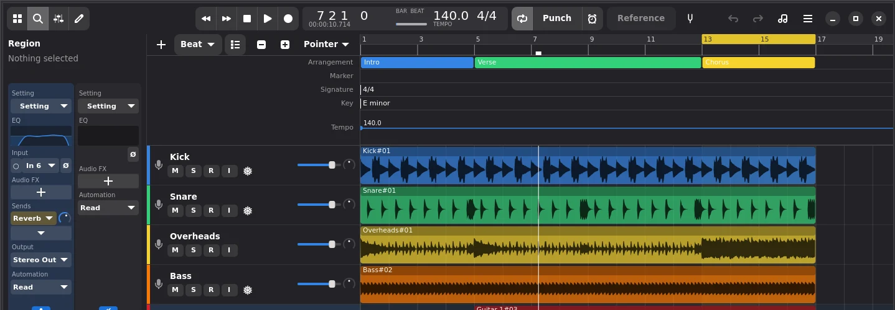
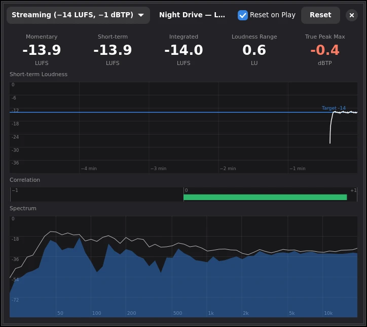

Everything in Solstice
A complete digital audio workstation, free and open source. It's built first for recording and finishing a band's songs, with the editing, instruments and mixing tools you'd expect from any full studio.
Getting started
Solstice gets your system ready the first time it opens, and starts every song from a working session.
- First-run setup
- Checks realtime priority, picks your audio interface and buffer size, sets your project and export folders, and finds your plug-ins.
- Windows plug-ins
- Installs Wine and yabridge through your desktop's own software installer, then bridges Windows VST3s in.
- Project Chooser
- Templates for band recording, songwriting, electronic, hip hop and podcasts, your own templates and recent projects.
- Start as you mean to go on
- Set the tempo, time signature and key before the project opens.
- One interface, one clock
- Solstice connects only to the interface you choose, so other sound cards can't hold back a small buffer.
- Keyboard shortcuts
- Single keys for the transport and views, listed in the app's shortcuts window.
Recording
Built for tracking a band in a room, from a single overdub to every mic at once.

- Take folders
- Cycle-record passes into one folder, then swipe across them to comp the best performance.
- Autopunch, count-in and pre-roll
- Drop in on a single phrase without touching the transport.
- Low latency monitoring
- Input monitoring within a single audio period, with auto input monitoring and low latency mode.
- Recording delay compensation
- Measured with a loopback cable, so overdubs line up with what they were played against.
- Metronome
- Groups its clicks in odd and compound meters.
- Tuner
- On the selected track's input, reaching down to 40 Hz for drop-tuned extended-range guitars and four-string bass.
- Capture as Recording
- Keeps the MIDI you played before you pressed record.
- Musical Typing
- Plays instruments from the computer keyboard.
Guitar and bass
Guitar DI and Bass DI strips lay out their inserts as Pedals, Amp, Cabinet and Effects, with a picture of each plug-in.
- Neural Amp Modeler
- Built in, with a starter library of amp and pedal captures.
- Impulse Response
- A loader for cabinets and rooms, with starter cabinets.
- Pedals
- Noise Gate, Overdrive and Saturation, each with factory presets.
- Re-amping
- Hardware outputs to send a DI back to a real amp, left out of bounces and exports.
- Amp, Cabinet and Pedal categories
- Your own plug-ins sorted into the same sections in the plug-in list.
Editing
- Audio file editor
- Work on a recording's audio directly.
- Take folder comping
- Each take on its own lane, with the parts that play lit up.
- Piano roll and Event List
- Draw and edit notes, or change every event by number.
- Quantize
- To the grid, to swing grooves, or to groove templates made from any MIDI region.
- Automation
- Read, Touch, Latch and Write modes.
- Regions
- Split, join, repeat, colour, duplicate and right-click menus for regions and tracks.
Drums
For programming a guide part before the drummer arrives, or a whole kit when there isn't one.
- Drum Kit
- Its own synthesised kit, with samples you can load onto its pads.
- Step sequencer
- Per-step velocity, gate, repeats, chance, offset and ties, with rows of their own rate and length.
- Starter patterns
- In over a dozen styles, with Euclidean and random fills.
- Drum map
- Name, reorder, hide, mute and solo each drum sound.
- Hits view
- A row per drum sound in the piano roll.
Arrangement
- Global tracks
- Sections, markers, signature, key and tempo changes.
- Cycle and skip cycle
- Drag in the bar ruler to loop a range, or Ctrl-drag for a range that playback jumps over.
- Track Stacks
- Folder and summing stacks.
- Track alternatives
- Try another arrangement of a track and switch back.
- Loop browser
- Your own loop folders, ready to drag in.
Mixing

- Buses and sends
- Aux buses with pre-fader, post-fader and post-pan sends.
- VCA faders
- Ride a group of tracks with one fader.
- Side-chain keying
- Duck the bass under the kick with the Compressor, or open the Noise Gate from another track.
- Plug-in delay compensation
- Everything stays in time, whatever's on the inserts.
- Cue mixes
- On hardware outputs, starting from the main mix.
- Channel strip settings
- Save and load whole strips, with factory settings for vocals, drums, buses and sends.
- Mixer gestures
- Shift for fine control, Alt-click to reset, gang selected strips, and drag across mute and solo buttons to paint them.
- Real-time worker threads
- Track processing is spread across your CPU's cores.
Mastering
Finish the record in the same session you mixed it in.

- Loudness window
- Momentary, short-term and integrated LUFS, loudness range, true peak, correlation and spectrum.
- Loudness targets
- Measure against a target such as streaming's −14 LUFS.
- Reference tracks
- Level-matched, so you can compare your master with a finished one fairly.
- Limiter
- Built in, alongside the Channel EQ and Compressor.
Plug-ins
- VST3, CLAP and LV2
- Effects and instruments, with the plug-in list grouped by type, developer or name.
- Crash-safe scanning
- VST3 and CLAP modules are scanned in a separate process, so one that crashes can't take Solstice down.
- Windows VST3s
- Through yabridge, which first-run setup can install.
- Presets
- Factory presets on every built-in, and any plug-in's settings saved as your own.
- Effects
- Channel EQ, Compressor, Limiter, Noise Gate, Saturation, Overdrive, De-esser, Stereo Delay, Reverb, Neural Amp Modeler, Impulse Response.
- Instruments and MIDI FX
- Drum Kit, Sampler and Solstice Synth; Arpeggiator, Chord Trigger, Note Repeater, Scale Quantize, Transposer and Velocity Processor.
Import and export
- Mix export
- Faster than real time to 16 and 24-bit WAV and FLAC or 32-bit float WAV, with dither and loudness normalisation.
- Stems
- Export tracks and buses as separate files.
- Bounce in place and Track Freeze
- Free up the CPU without losing the plug-ins.
- Project import
- Final Cut Pro XML, MIDI files and Logic Pro project bundles, with tempo maps, signature changes, markers and key.
- Recordings placed where they were made
- A bundle's recordings land at their recorded positions, from the time stamp in each file.
All of it, free.
No feature is held back for a paid version, because there isn't one.